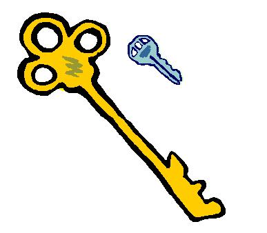

Cryptographie et codes secrets


 Cryptographie!
Cryptographie! De la taille des clés dans un système cryptographique
 Le citoyen attentif a pu être choqué en 2000 par deux annonces apparemment contradictoires. D'une part, le législateur autorisait l'usage d'outils cryptographiques avec des clés de 128 bits (contre 40 bits auparavant), afin que chacun puisse préserver la confidentialité de ses échanges -mais au fait, que signifie une clé de 128 bits? En même temps, on apprenait que l'informaticien Serge Humpich avait cassé la clé de 320 bits protégeant les cartes bleues. Mais alors, si un amateur peut casser une clé de 320 bits, les clés de 128 bits n'offriraient aucune protection?
Heureusement si! Les tailles des clés ne font pas référence au même usage. Les 128 bits concernent les algorithmes à clé secrète, comme le DES ou l'AES. Les 320 bits sont en rapport avec un algorithme à clé publique, le RSA. Et 128 bits pour l'un sont très supérieurs à 320 bits pour l'autre! On peut d'ailleurs facilement comprendre pourquoi : dans un algorithme à clé publique, on dispose d'une information supplémentaire (=la clé publique). Il est tout à fait concevable qu'il faille une clé plus longue pour préserver la sécurité.
Alors, quelle est la bonne taille de la clé? Il faut au minimum qu'elle puisse résister à une attaque exhaustive, en essayant
toutes les clés possibles. Les 56 bits de l'algorithme DES, largement utilisé jusqu'à la fin des années 1990,
sont devenus très insuffisants, et pour un algorithme à clé secrète, ce sont des clés de 128 bits ou 256 bits que l'on utilise désormais.
Concernant le RSA, le record est la factorisation d'un entier de 768 bits. L'usage des clés de 1024 bits, répandu entre 2000 et 2010,
est désormais fortement déconseillé, et il est recommandé de choisir une clé de 2048 bits, voire 4096 bits pour un usage sensible.
Mais la taille de la clé n'est pas tout! Prenons l'exemple des substitutions monoalphabétiques, les alphabets désordonnés. Il existe 26! = 4× 1026 possibilités, ce qui est à peu près égal à 286, soit une clé de 86 bits. Mais on n'attaque pas une telle substitution en essayant toutes les clés, mais en faisant une analyse des fréquences. Ce n'est pas parce que la clé est très grande que la serrure est bonne!
Même dans des protocoles récents, utilisés comme standards, une clé de grande taille peut donner l'illusion
de la sécurité alors qu'elle absente. C'est ce qui est arrivé au protocole WEP, utilisé jusqu'en 2004 pour sécuriser les communications wifi. Ce protocole fonctionnait
de la façon suivante (nous modélisons un échange de données entre une box internet et un ordinateur). La box internet est en possession d'une clé.
Cette clé est assez longue (typiquement 104 bits), et doit être entrée manuellement sur l'ordinateur. Les deux appareils s'échangent ensuite un vecteur
d'initialisation de la taille de 24 bits. Cette clé et ce vecteur alimentent ensuite un algorithme de chiffrement par flots, RC4. Celui-ci produit, à partir de la clé et du vecteur d'initialisation, une suite pseudo-aléatoire de 0 et de 1. Cette suite est ensuite
ajoutée au message clair comme dans le chiffre de Vernam (par un ou exclusif) pour constituer le message chiffré.
 Ce genre d'algorithme est très rapide et, s'il est bien conçu, il est plutôt sûr. Avec une clé aussi longue (104 bits, très bon pour l'époque),
on a donc un sentiment assez fort de sécurité. Mais ces algorithmes ont aussi un inconvénient : la même suite pseudo-aléatoire de 0 et de 1 ne doit jamais être réemployée.
Or, pour tout appareil dialoguant avec la box, cette suite est générée à partir de la clé, qui est fixe, et des 24 bits du vecteur d'initialisation. Ainsi, il n'y a
que $2^{24}$ suites différentes de 0 et de 1 qui peuvent être générées, soit un peu plus de 16 millions. Par le paradoxe des anniversaires, il suffit d'à peu près 5000 échanges pour qu'il y ait plus d'une chance sur deux pour que
la même clé soit utilisée. Dans un réseau, c'est vraiment très peu. Ainsi, la sécurité d'une clé de 104 bits n'était que virtuelle. La vraie sécurité
était sur 24 bits seulement!
Ce genre d'algorithme est très rapide et, s'il est bien conçu, il est plutôt sûr. Avec une clé aussi longue (104 bits, très bon pour l'époque),
on a donc un sentiment assez fort de sécurité. Mais ces algorithmes ont aussi un inconvénient : la même suite pseudo-aléatoire de 0 et de 1 ne doit jamais être réemployée.
Or, pour tout appareil dialoguant avec la box, cette suite est générée à partir de la clé, qui est fixe, et des 24 bits du vecteur d'initialisation. Ainsi, il n'y a
que $2^{24}$ suites différentes de 0 et de 1 qui peuvent être générées, soit un peu plus de 16 millions. Par le paradoxe des anniversaires, il suffit d'à peu près 5000 échanges pour qu'il y ait plus d'une chance sur deux pour que
la même clé soit utilisée. Dans un réseau, c'est vraiment très peu. Ainsi, la sécurité d'une clé de 104 bits n'était que virtuelle. La vraie sécurité
était sur 24 bits seulement!